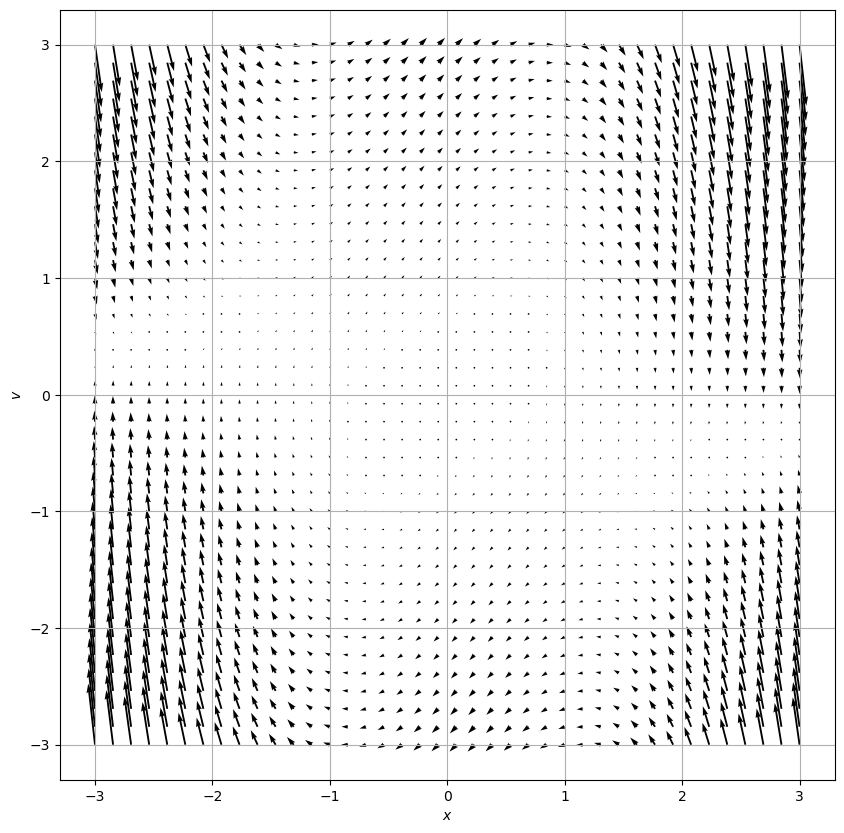

26 Sep 23 - Graphing Electric Fields
26 Sep 23 - Graphing Electric Fields#
import numpy as np
import matplotlib.pyplot as plt
x = np.linspace(-5,5,5)
y = np.linspace(-5,5,5)
X,Y = np.meshgrid(x,y)
u = X**2
v = Y**2
q = 1e-4
r_source = np.array([0,0])
k = 9e9
def VP_eqn(x, v, mu = 1.):
xdot, vdot = [v,-mu * (x**2 - 1)*v - x]
return xdot, vdot
def point_charge_E(X, Y, q,r_source):
xdot, vdot = np.zeros(X.shape), np.zeros(Y.shape)
Xlim, Ylim = X.shape
for i in range(Xlim):
for j in range(Ylim):
xloc = X[i, j]
yloc = Y[i, j]
xdot[i,j], vdot[i,j] = VP_eqn(xloc, yloc,mu)
return xdot, vdot
N = 40
x = np.linspace(-3., 3., N)
v = np.linspace(-3., 3., N)
X, V = np.meshgrid(x, v)
xdot, vdot = point_charge_E(X, V,mu)
ax = plt.figure(figsize=(5,5))
Q = plt.quiver(X, V, xdot, vdot, color='k')
plt.grid()
plt.xlabel('$x$')
plt.ylabel('$v$')
plt.show()
---------------------------------------------------------------------------
NameError Traceback (most recent call last)
Input In [1], in <cell line: 32>()
30 v = np.linspace(-3., 3., N)
31 X, V = np.meshgrid(x, v)
---> 32 xdot, vdot = point_charge_E(X, V,mu)
33 ax = plt.figure(figsize=(5,5))
34 Q = plt.quiver(X, V, xdot, vdot, color='k')
NameError: name 'mu' is not defined
import numpy as np
import matplotlib.pyplot as plt
from scipy.integrate import solve_ivp
def VP_eqn(x, v, mu = 1.):
xdot, vdot = [v,-mu * (x**2 - 1)*v - x]
return xdot, vdot
def VP_phase(X, Y, mu):
xdot, vdot = np.zeros(X.shape), np.zeros(Y.shape)
Xlim, Ylim = X.shape
for i in range(Xlim):
for j in range(Ylim):
xloc = X[i, j]
yloc = Y[i, j]
xdot[i,j], vdot[i,j] = VP_eqn(xloc, yloc,mu)
return xdot, vdot
def VP_eqn_for_solve_ivp(t,curr_vals, mu=1): # need to rephrase this to work with what solve_ivp expects
x, v = curr_vals
xdot, vdot = VP_eqn(x,v,mu)
return xdot,vdot
# Numerical Integration
tmax = 20
dt = 0.05
tspan = (0,tmax)
t = np.arange(0,tmax,dt)
mu = 1.
initial_condition = [1, 1]
solved = solve_ivp(VP_eqn_for_solve_ivp,tspan,initial_condition,t_eval = t, args = (mu,),method="RK45")
# Plotting stuff
N = 40
x = np.linspace(-3., 3., N)
v = np.linspace(-3., 3., N)
X, V = np.meshgrid(x, v)
xdot, vdot = VP_phase(X, V,mu)
ax = plt.figure(figsize=(10,10))
Q = plt.quiver(X, V, xdot, vdot, color='k')
plt.grid()
plt.xlabel('$x$')
plt.ylabel('$v$')
plt.show()
